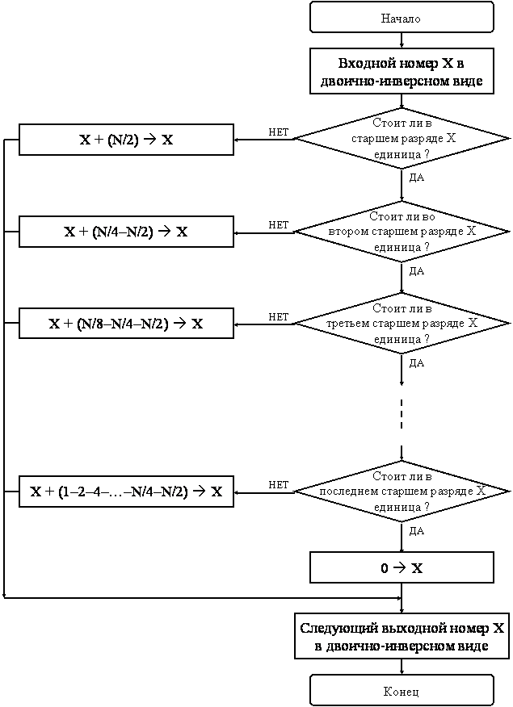

Для чисел из диапазона от 0 до 7 двоично-инверсный счетчик можно представить в виде следующей таблицы:
| Номер | Двоичное представление | Двоичная инверсия | Двоично-инверсный номер |
| 0 | 000 | 000 | 0 |
| 1 | 001 | 100 | 4 |
| 2 | 010 | 010 | 2 |
| 3 | 011 | 110 | 6 |
| 4 | 100 | 001 | 1 |
| 5 | 101 | 101 | 5 |
| 6 | 110 | 011 | 3 |
| 7 | 111 | 111 | 7 |
Для программной реализации двоично-инверсного счетчика при отсутствии соответствующего способа адресации можно использовать различные алгоритмы. Одним из таких алгоритмов является алгоритм, предложенный Рэйдером (рис. 6.1):

Рисунок 6.1 – Алгоритм Рейдера
Суть перестановки данных заключается в по парной перестановке соответствующих отсчетов сигнала. Для 16 отсчетов необходимы следующие перестановки (рис. 6.2):
Рисунок 6.2 – Двоично-инверсная перестановка данных
Элементы с одинаковыми номерами переставлять нет необходимости, а первыми необходимо поменять местами элементы 1–8. При этом, когда мы дойдем до 8-го элемента в первой строке, то окажется что элементы 8–1 уже были переставлены ранее и их переставлять также нет необходимости.
Не смотря на кажущуюся сложность алгоритма (рис. 6.1) программная реализация его достаточно проста, если для поиска первого нуля использовать вычитание бегущей в право единицы.
Перестановка выполняется только для элементов номер (адрес) источника которых меньше номера (адреса) приемника или наоборот.
Из проверки всегда можно исключить первый (0…0) и последний (1…1) элементы.
Для того чтобы переставить пару элементов совсем не обязательно пользоваться рабочими ячейками. Для этого можно использовать 32-разрядный аккумулятор загрузив первый элемент в старшую, а второй в младшую часть аккумулятора (или наоборот). После чего записать содержимое аккумулятора в обратном порядке – младшую часть на место первого элемента и старшую – на место второго элемента.
При наличии двух аккумуляторов можно легко переставлять комплексные числа (по два 16-разрядных слова).
Чтобы загрузить в аккумулятор два числа можно использовать команды LD со сдвигом на 16 и OR, XOR, ADDS или LDU и ADD со сдвигом на 16. Сохранение переставленных данных выполняется обычными командами STL и STH. Можно также использовать два аккумулятора и обмениваться сразу двойными словами (действительной и мнимой частями) используя команды DLD и DST.